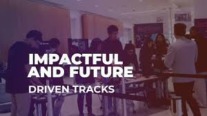
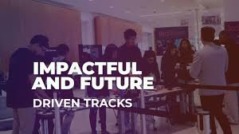

History
TechCon started in 2010 as a small gathering of technology enthusiasts. Over the years, it has grown into an international conference attracting innovators, entrepreneurs, and industry leaders from around the world
TechCon started in 2010 as a small gathering of technology enthusiasts. Over the years, it has grown into an international conference attracting innovators, entrepreneurs, and industry leaders from around the world
TechCon 2024 aims to inspire innovation, encourage collaboration, and promote learning in emerging technologies. Our goal is to provide a platform where ideas can flourish and the tech community can connect.

Mr. John Doe is a renowned tech entrepreneur who shared his insights on startup growth and innovation at TechCon 2021.
Dr. Jane Smith is a leading AI researcher who presented groundbreaking work on neural networks and machine learning at TechCon 2022.